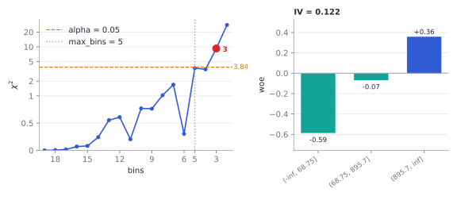
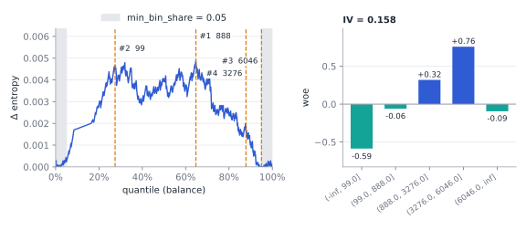
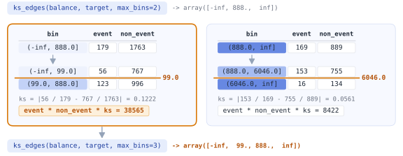
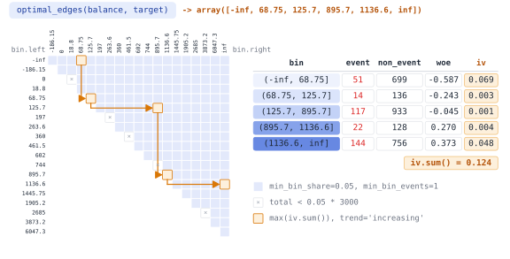
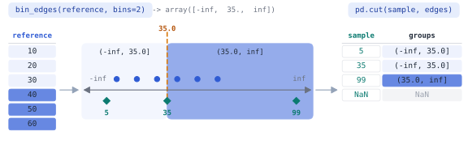
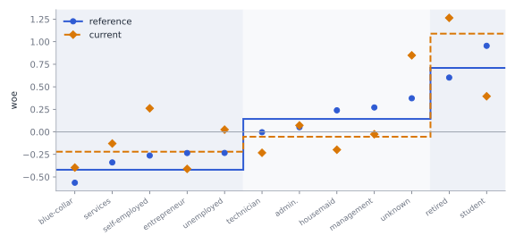

Binning#
bin_edges() fits numeric bin edges on a reference sample and returns them as an array for pandas.cut. The reference can be a list, a NumPy array or a pandas Series. Keep the array: the same edges must be applied to every sample that is compared with the reference.
In credit scoring, binning is the classing step of scorecard development: a continuous variable becomes a handful of groups whose WOE can be read, explained to the business and monitored over time. This page compares the ways to choose the edges.
Binning follows the univariate profile, which ranks the candidates by a quick binning, and comes before the weight of evidence, which measures and encodes the groups. bin_edges chooses the edges from the values alone; chimerge_edges(), tree_edges(), ks_edges(), monotonic_edges() and optimal_edges() also use the target, variance_edges() uses a continuous response such as a realized LGD, and cut() groups a sample, with a group of its own for each special code.
Categorical variables are grouped in the same two steps: category_groups() pools rare categories, chimerge_groups() merges categories with similar event rates, and group_categories() applies the grouping to a sample.
Quantile and uniform edges#
Use quantile bins to divide the reference observations by rank, or uniform bins to divide their numeric range into equal widths.
>>> import pandas as pd
>>> from kivi.binning import bin_edges
>>> values = pd.Series([1, 2, 2, 3, 4, 5, 8, 13, 21, 34])
>>> bin_edges(values, bins=3)
array([-inf, 3., 8., inf])
>>> bin_edges(values, bins=3, method="uniform")
array([-inf, 12., 23., inf])
Quantile bins hold roughly equal numbers of observations, which suits skewed variables. Uniform bins keep equal widths, so a long tail can leave some bins nearly empty.
Account balances are typical of financial data: most customers hold small amounts and a few hold very large ones. On the bank data, quantile bins split the reference sample evenly, while uniform bins put almost everyone into the first bin.
>>> from kivi.datasets import load_bank
>>> data = load_bank()
>>> reference = data.iloc[:3000]
>>> balance = reference["balance"]
>>> quantile = pd.cut(balance, bin_edges(balance, bins=5))
>>> uniform = pd.cut(balance, bin_edges(balance, bins=5, method="uniform"))
>>> quantile.value_counts(sort=False).tolist()
[600, 600, 602, 598, 600]
>>> uniform.value_counts(sort=False).tolist()
[2871, 111, 12, 5, 1]

Left: the balance distribution, cut at its 99th percentile, with the quantile edges (solid) and the first uniform edge (dashed). Right: customers per bin. Uniform bins leave the upper bins almost empty, so their WOE would rest on a handful of customers.#
Custom edges#
The edges do not have to come from bin_edges(). Any increasing array works with pandas.cut and the metric functions, so policy bands and expert edges fit the same workflow. Keep infinite outer edges so that every future value is covered.
>>> import numpy as np
>>> from kivi.woe import woe_table
>>> age_bands = np.array([-np.inf, 25, 35, 45, 55, 65, np.inf])
>>> by_band = woe_table(pd.cut(reference["age"], age_bands), reference["target"]).sort_index()
>>> by_band["woe"].round(2).tolist()
[0.79, -0.03, -0.17, -0.0, 0.04, 1.11]
Risk data often encode a state as a number, for example -1 for “never contacted” or 999 for “no record”. In the bank data, 82% of the reference customers have pdays == -1, so quantile binning collapses the variable into a single bin and its information value is lost. An edge at -1 gives the code a bin of its own.
>>> import warnings
>>> with warnings.catch_warnings(record=True) as caught:
... warnings.simplefilter("always")
... collapsed = bin_edges(reference["pdays"], bins=5)
>>> collapsed
array([-inf, inf])
>>> print(caught[0].message)
tied edges leave 1 of the 5 requested bins; the value -1 makes up 82% of the fitted values, consider passing it in special
>>> pdays_edges = np.array([-np.inf, -1, 100, 200, 300, np.inf])
>>> pdays = woe_table(pd.cut(reference["pdays"], pdays_edges), reference["target"]).sort_index()
>>> pdays[["event", "non_event", "woe"]].round(3)
event non_event woe
bin
(-inf, -1.0] 228 2247 -0.257
(-1.0, 100.0] 47 48 2.010
(100.0, 200.0] 46 138 0.932
(200.0, 300.0] 10 77 -0.010
(300.0, inf] 17 142 -0.092
>>> print(f"IV = {pdays['iv'].sum():.3f}")
IV = 0.360

Left: age bands show a U shape, with the youngest and oldest customers more likely to subscribe. Right: customers contacted in a previous campaign within 200 days stand out once the -1 code has its own bin.#
The edge at -1 works because no real value of pdays lies below the code. To fit the other edges from the data instead, or for a code inside the range of real values, pass the code in special; see Special values.
Merging fine bins#
Scorecard development usually starts from many fine bins and merges neighbours, a step known as coarse classing, until each bin is large enough to be stable and the WOE follows a trend that can be explained. Select a subset of the fitted edges to merge bins; keeping the first and last edge keeps the infinite ends.
>>> fine = bin_edges(balance, bins=10)
>>> fine_woe = woe_table(pd.cut(balance, fine), reference["target"]).sort_index()
>>> fine_woe["woe"].round(2).tolist()
[-0.52, -0.71, -0.46, 0.1, -0.24, 0.06, 0.05, 0.35, 0.37, 0.4]
>>> coarse = fine[[0, 3, 7, 10]]
>>> coarse
array([ -inf, 125.7, 1136.6, inf])
>>> coarse_woe = woe_table(pd.cut(balance, coarse), reference["target"]).sort_index()
>>> coarse_woe["woe"].round(3).tolist()
[-0.522, -0.002, 0.373]
>>> bool(coarse_woe["woe"].is_monotonic_increasing)
True
>>> print(f"IV {fine_woe['iv'].sum():.3f} -> {coarse_woe['iv'].sum():.3f}")
IV 0.123 -> 0.115

Ten fine bins (left) zigzag; three merged bins (right) rise steadily with balance and give up little information value.#
Choosing the merges by hand works for a few variables. The supervised methods in the next section search for them automatically, and two of them start from fine quantile bins in the same way.
Supervised binning#
Quantile and uniform edges ignore the target. The supervised methods use it to place edges between customers with different event rates, which is what the WOE of each bin measures. They take the values and a 0/1 target, as Series on the same index or as arrays and lists matched by position, omit missing values and any codes passed in special while fitting, and return edges in the same form as bin_edges(): increasing, with infinite outer edges, ready for pandas.cut, woe_table() and psi_table(). Each returns at most max_bins bins, 5 by default.
Function |
How it fits the edges |
Main options |
|---|---|---|
Merges adjacent fine bins whose event rates do not differ significantly. |
|
|
Splits the values where a decision tree gains the most purity. |
|
|
Splits the values where the cumulative shares of events and non-events differ most. |
|
|
Merges adjacent fine bins until the WOE rises or falls steadily. |
|
|
Finds the merge of fine bins with the largest information value that meets every constraint. |
|
As with bin_edges, fit the edges on the reference sample only and apply the saved array to every other sample. For a continuous response instead of a 0/1 target, variance_edges() takes the place of these methods; see Continuous responses.
ChiMerge#
chimerge_edges() starts from fine quantile bins, 20 by default, and repeatedly merges the adjacent pair whose event rates are most alike, the pair with the smallest chi-square statistic. Merging continues while more than max_bins bins remain or while some adjacent pair does not differ significantly at level alpha.
>>> from kivi.binning import chimerge_edges, monotonic_edges, tree_edges
>>> target = reference["target"]
>>> chi_edges = chimerge_edges(balance, target)
>>> chi_edges
array([ -inf, 68.75, 895.7 , inf])
>>> by_chi = woe_table(pd.cut(balance, chi_edges), target).sort_index()
>>> by_chi[["event", "non_event", "woe"]].round(3)
event non_event woe
bin
(-inf, 68.75] 51 699 -0.587
(68.75, 895.7] 131 1069 -0.068
(895.7, inf] 166 884 0.358
>>> print(f"IV = {by_chi['iv'].sum():.3f}")
IV = 0.122
Five bins were allowed, but with five and with four bins some adjacent pair still had a chi-square below 3.84, the critical value at alpha=0.05, so merging went on to three bins. Pass alpha=None to merge down to max_bins only, or a larger alpha to keep more bins.

Left: the smallest chi-square between adjacent bins as the fine bins are merged, read from left to right. Merging stops at the first count no larger than max_bins at which every pair lies above the alpha line. Right: the WOE of the final bins rises with balance.#
A significant difference can keep a small bin apart. On age, the 3.5% of customers over 59 subscribe so much more often that they keep a bin of their own. min_bin_share applies to the fine bins, before any chi-square merge: while some fine bin holds less than that share of the reference, the smallest one is merged into the neighbour whose chi-square statistic with it is smaller. Nine of the twenty fine bins of age hold less than 5%, the one over 59 among them, so ChiMerge starts from eleven bins and no final bin holds less than 5%. The default, 0, merges no bin for its size:
>>> age = reference["age"]
>>> chimerge_edges(age, target)
array([-inf, 29., 59., inf])
>>> chimerge_edges(age, target, min_bin_share=0.05)
array([-inf, 29., 56., inf])
Decision tree#
tree_edges() grows a decision tree on the one variable. Each split cuts a bin at the value that most reduces the impurity of the target, measured by entropy (the default) or by the Gini index with criterion="gini". The bin whose best split gains the most is split next, until there are max_bins bins or no allowed split reduces the impurity. min_bin_share keeps every bin above a share of the observations, 5% by default, so that its WOE rests on enough customers. The interior edges are observed values.
>>> tree = tree_edges(balance, target)
>>> tree
array([ -inf, 99., 888., 3276., 6046., inf])
>>> by_tree = woe_table(pd.cut(balance, tree), target).sort_index()
>>> by_tree[["event", "non_event", "woe"]].round(3)
event non_event woe
bin
(-inf, 99.0] 56 767 -0.586
(99.0, 888.0] 123 996 -0.061
(888.0, 3276.0] 106 587 0.319
(3276.0, 6046.0] 47 168 0.757
(6046.0, inf] 16 134 -0.094
>>> print(f"IV = {by_tree['iv'].sum():.3f}")
IV = 0.158
The tree separates the classes best, but it does not look for a trend: customers above 6,046 subscribe less often than those just below them. A scorecard needs a WOE pattern that can be explained, so check the trend of tree bins before using them, and merge bins where it breaks.

Left: the entropy reduction of every possible first cut. Cuts in the shaded areas would leave less than min_bin_share of the customers in a bin. The dashed lines are the tree’s cuts, numbered in the order they were made. Right: the WOE of the five bins rises, then falls in the top bin.#
Best KS#
ks_edges() splits the values too, but it measures a cut by the KS of Model performance: the gap between the cumulative shares of the events and of the non-events up to the cut. The first cut is where that gap is largest in the whole sample, so two bins keep the KS that ks() measures on the raw values:
>>> from kivi.binning import ks_edges
>>> from kivi.metrics import ks
>>> two_bins = ks_edges(balance, target, max_bins=2)
>>> two_bins
array([-inf, 888., inf])
>>> print(f"KS = {ks(balance, target):.3f}")
KS = 0.150
>>> print(f"KS = {ks(pd.cut(balance, two_bins, labels=False), target):.3f}")
KS = 0.150
Each bin is then cut where its own KS is largest, among the cuts that leave at least min_bin_share of the observations, 5% by default, on each side. The bin split next is the one whose cut ranks the most pairs of a subscriber and a non-subscriber apart: its KS times the numbers of subscribers and non-subscribers in the bin. Each such pair adds the same amount to the Gini coefficient of the bins, so a sharp cut in a bin of a few customers does not take a split from a larger bin, and neither does a large bin whose classes barely separate. Splitting stops at max_bins bins, or when no bin has an allowed cut with a positive KS.
>>> ks_edges(balance, target, max_bins=3)
array([-inf, 99., 888., inf])

The second step of ks_edges. Each bin of the first cut is cut where its own KS is largest. The cut of the lower bin, at 99, ranks 38565 pairs of a subscriber and a non-subscriber apart, and the cut of the upper bin, at 6046, only 8422, so the lower bin is split.#
The lower bin holds 179 subscribers and 1,763 non-subscribers, and its cut at 99 leaves 56 and 767 of them on the left, a KS of \(|56 / 179 - 767 / 1763| = 0.122\). The best cut of the upper bin, at 6,046, has a KS of 0.056 in a smaller bin, so the upper bin waits for the third step. There its cut ranks more pairs apart than the cuts of the two new bins, although its KS is the smallest of the three. Splitting goes on in this way up to five bins:
>>> best_ks = ks_edges(balance, target)
>>> best_ks
array([ -inf, 99., 888., 3276., 6046., inf])
>>> by_ks = woe_table(pd.cut(balance, best_ks), target).sort_index()
>>> print(f"IV = {by_ks['iv'].sum():.3f}")
IV = 0.158
On the account balance, Best KS finds the five bins of the decision tree, cut in the same order. The criteria still differ: the gain of a tree also depends on how many customers each side holds, while the KS depends only on the gap between the two classes. On campaign, the number of contacts in the campaign, the tree sets apart the 5% of customers contacted more than seven times, while Best KS divides those contacted up to four times:
>>> campaign = reference["campaign"]
>>> ks_edges(campaign, target)
array([-inf, 1., 2., 3., 4., inf])
>>> tree_edges(campaign, target)
array([-inf, 1., 3., 4., 7., inf])
Like the tree, Best KS does not look for a trend: here too the customers above 6,046 subscribe less often than those just below them. Check the WOE of its bins before using them.

Left: the KS of every possible first cut. The first cut takes the largest KS outside the shaded areas, where a bin would hold less than min_bin_share of the customers. The dashed lines are the cuts of ks_edges, numbered in the order they were made. Right: the WOE of the five bins rises, then falls in the top bin.#
Monotonic binning#
monotonic_edges() also starts from fine quantile bins. Whenever two adjacent bins break the trend, it merges them and recomputes the WOE (pool adjacent violators), so the WOE of the final bins is strictly increasing or strictly decreasing. If more than max_bins bins remain, it then merges the most similar adjacent pairs by chi-square. direction="auto" tries both trends and keeps the one with the larger information value; pass "increasing" or "decreasing" to impose the trend that the business expects.
>>> mono = monotonic_edges(balance, target)
>>> mono
array([ -inf, 68.75, 125.7 , 895.7 , 1136.6 , inf])
>>> by_trend = woe_table(pd.cut(balance, mono), target).sort_index()
>>> by_trend["woe"].round(3).tolist()
[-0.587, -0.243, -0.045, 0.27, 0.373]
>>> bool(by_trend["woe"].is_monotonic_increasing)
True
>>> print(f"IV = {by_trend['iv'].sum():.3f}")
IV = 0.124
The trend is checked with the same smoothing as woe_table(), so the WOE that woe_table reports for these bins is monotonic as well, even when a bin has no events.

Left: the WOE of the fine quantile bins zigzags; pooling adjacent violators turns it into a rising step (max_bins=None). Right: merged further to max_bins=5, the WOE still rises with balance.#
min_bin_share merges small fine bins first here as well, as in ChiMerge, before the trend is checked.
Optimal binning#
The methods above build the bins step by step, and each guarantees one property: ChiMerge the significance of neighbouring bins, the tree and Best KS a minimum share, monotonic binning a trend. None of them limits the events in a bin, and none fits a U shape. optimal_edges() starts from the same fine quantile bins as ChiMerge and returns, of all the ways to merge them, the binning with the largest information value that meets every constraint at once:
at most
max_binsbins, 5 by default;at least
min_bin_shareof the reference in every bin, 5% by default;at least
min_bin_eventsevents and as many non-events in every bin, 1 by default;a WOE that follows
trend:"increasing","decreasing","u_shaped","inverted_u"or"any", or by default"auto", the better of the two monotonic trends.
The information value is a sum over the bins, so dynamic programming finds the best binning exactly, without a solver. Every bin holds both classes, so no WOE rests on smoothing. On balance, the result is that of monotonic_edges(): merging greedily already reaches the best monotonic binning here, so the reason to use optimal_edges is the constraints rather than a higher information value.
>>> from kivi.binning import optimal_edges
>>> optimal_edges(balance, target)
array([ -inf, 68.75, 125.7 , 895.7 , 1136.6 , inf])

How optimal_edges chooses. Tied quantiles leave 19 fine bins of balance, so every candidate bin is a cell of the triangle, from the fine bin of its row to that of its column; the crossed-out cells hold less than 5% of the reference. A binning is a path that starts each bin where the last one stopped, and dynamic programming finds the path with the largest sum of iv among those whose WOE rises or falls throughout, here the five amber bins with a rising WOE.#
The constraints make the difference. On the call duration, monotonic binning leaves the shortest calls in a bin without a single subscriber, whose WOE comes from the smoothing alone:
>>> duration = reference["duration"]
>>> by_calls = woe_table(pd.cut(duration, monotonic_edges(duration, target)), target)
>>> by_calls[["event", "non_event", "woe"]].round(3)
event non_event woe
bin
(-inf, 76.0] 0 458 -4.791
(76.0, 205.0] 48 1151 -1.148
(205.0, 585.1] 167 876 0.372
(585.1, 765.05] 51 99 1.366
(765.05, inf] 82 68 2.217
>>> print(f"IV = {by_calls['iv'].sum():.3f}")
IV = 1.830
With min_bin_events=10 every bin holds at least ten subscribers and ten non-subscribers:
>>> calls = optimal_edges(duration, target, min_bin_events=10)
>>> by_optimal = woe_table(pd.cut(duration, calls), target)
>>> by_optimal[["event", "non_event", "woe"]].round(3)
event non_event woe
bin
(-inf, 120.0] 14 887 -2.118
(120.0, 205.0] 34 722 -1.025
(205.0, 381.0] 103 642 0.201
(381.0, 765.05] 115 333 0.968
(765.05, inf] 82 68 2.218
>>> print(f"IV = {by_optimal['iv'].sum():.3f}")
IV = 1.477
The lower information value is the more honest one: part of the 1.830 came from the empty cell, whose WOE of -4.791 is set by the smoothing value rather than by the data.
Age has a U shape: the youngest and the oldest customers subscribe more often than the others. A monotonic trend can only cut it once, while trend="u_shaped" lets the WOE fall and then rise:
>>> from kivi.woe import woe_trend
>>> optimal_edges(age, target)
array([-inf, 29., inf])
>>> u_edges = optimal_edges(age, target, trend="u_shaped")
>>> by_age = woe_table(pd.cut(age, u_edges), target)
>>> by_age[["total_share", "event", "event_rate", "woe"]].round(3)
total_share event event_rate woe
bin
(-inf, 29.0] 0.110 52 0.158 0.354
(29.0, 38.0] 0.373 118 0.105 -0.107
(38.0, 42.0] 0.123 33 0.089 -0.293
(42.0, 56.0] 0.304 104 0.114 -0.021
(56.0, inf] 0.089 41 0.153 0.319
>>> woe_trend(by_age)
'u_shaped'
>>> print(f"IV = {by_age['iv'].sum():.3f}")
IV = 0.040
The information value doubles from the 0.018 of the two monotonic bins. "auto" never chooses a U shape: a U shape includes both monotonic trends, so it would almost always have the larger IV, and whether it can be explained is a judgement about the variable, such as the life cycle behind age. Ask for "u_shaped" or "inverted_u" where the business expects the shape, and "any" only to see the best binning without a trend.
Comparing the methods#
Supervised edges are chosen to separate the sample they are fitted on, so the information value on that sample is optimistic. Compare the methods on a later sample as well, keeping the edges fixed. ks_edges() and optimal_edges() are left out, because on balance their edges are those of tree_edges() and of monotonic_edges().
>>> current = data.iloc[3000:]
>>> fitted = {
... "bin_edges": bin_edges(balance, bins=5),
... "chimerge_edges": chi_edges,
... "tree_edges": tree,
... "monotonic_edges": mono,
... }
>>> def information_value(sample, edges):
... groups = pd.cut(sample["balance"], edges)
... return woe_table(groups, sample["target"])["iv"].sum()
>>> rows = {}
>>> for name, edges in fitted.items():
... rows[name] = {
... "bins": len(edges) - 1,
... "iv_reference": information_value(reference, edges),
... "iv_current": information_value(current, edges),
... }
>>> pd.DataFrame.from_dict(rows, orient="index").round(3)
bins iv_reference iv_current
bin_edges 5 0.099 0.084
chimerge_edges 3 0.122 0.016
tree_edges 5 0.158 0.065
monotonic_edges 5 0.124 0.020
On the reference sample all three supervised methods beat five quantile bins. On the later sample they fall behind: much of the extra separation they found in balance was noise, which is common for a weak variable and a few hundred events. Validate supervised edges on a later or held-out sample before adopting them, as Information value after supervised binning describes, and keep the variable under PSI monitoring once it is in use.
Continuous responses#
The methods above separate the events from the non-events of a 0/1 target. For a continuous response, such as the realized LGD or CCF of defaulted loans, variance_edges() separates the means instead. Of the merges of the same fine quantile bins as optimal_edges(), it returns the binning that leaves the smallest sum of squares of the response within its bins. With \(W_b\) the weight and \(m_b\) the mean response of bin \(b\), and \(m\) the mean of all the fitted values, that is the binning with the largest
the part of the variance of the response that the bins explain. The constraints are those of optimal_edges without the events: max_bins, min_bin_share and a trend of the means, by default the better of the two monotonic trends. The response may leave [0, 1], as LGDs above 1 do, but it must not be missing. In this example the responses of the values 1 to 4, 5 to 8 and 9 to 12 have the means 0.1, 0.5 and 0.95:
>>> from kivi.binning import variance_edges
>>> driver = pd.Series([1, 2, 3, 4, 5, 6, 7, 8, 9, 10, 11, 12])
>>> loss = pd.Series([0.1, 0.0, 0.2, 0.1, 0.5, 0.4, 0.6, 0.5, 0.9, 1.0, 0.8, 1.1])
>>> variance_edges(driver, loss, max_bins=3)
array([-inf, 4., 8., inf])
The three bins leave squares of 0.02, 0.02 and 0.05 around their means, less than any other three bins. A response whose bins all have the same mean gives a single bin. BinningSpec holds the WOE of a 0/1 target, so fit_spec() takes no continuous response: group the values with cut() and summarize each bin with lgd_table(), as the bins of the loan-to-value ratio in LGD and EAD show.
Applying the edges#
Infinite endpoints cover finite future observations outside the training range. Use the saved edges with pandas.cut on every sample.
>>> edges = bin_edges(pd.Series([10, 20, 30, 40, 50, 60]), bins=2)
>>> edges
array([-inf, 35., inf])
>>> pd.cut(pd.Series([5, 35, 99, None]), edges)
0 (-inf, 35.0]
1 (-inf, 35.0]
2 (35.0, inf]
3 NaN
dtype: category
Categories (2, interval[float64, right]): [(-inf, 35.0] < (35.0, inf]]

bin_edges fits the edge at 35 on the reference values (dots), and pandas.cut applies it to the sample (diamonds). 5 and 99 lie outside the reference range but fall into the infinite end bins, 35 lies on the edge and goes to the lower bin, and the missing value stays missing.#
Intervals are closed on the right, so a value equal to an edge belongs to the lower bin. Pass labels=False to pandas.cut for integer bin numbers instead of intervals.
Pass categorical labels directly to the metric functions. A missing label is a separate group. Only observed groups appear. Categorical groups, including the result of pandas.cut, follow the order of their categories with missing values last; other labels follow the order in which they first appear. For WOE, group and target series must have identical indices; arrays and lists are matched by position. Conventions describes these rules for every function.
Grouping categories#
A categorical variable needs no edges: each label is already a group. It may still need coarse classing. The WOE of a label held by a few dozen customers rests on a handful of events, and a scorecard with a group for each of many labels is hard to explain and to monitor. On the bank data, the WOE of four of the twelve jobs changes sign on the later sample:
>>> job = reference["job"]
>>> by_label = pd.DataFrame({
... "reference": woe_table(job, target)["woe"],
... "current": woe_table(current["job"], current["target"])["woe"],
... })
>>> by_label.sort_values("reference").round(3)
reference current
bin
blue-collar -0.564 -0.396
services -0.339 -0.129
self-employed -0.263 0.261
entrepreneur -0.235 -0.411
unemployed -0.233 0.025
technician -0.004 -0.232
admin. 0.052 0.072
housemaid 0.239 -0.198
management 0.271 -0.026
unknown 0.373 0.849
retired 0.602 1.265
student 0.955 0.395
Grouping categories follows the same two steps as binning. category_groups() and chimerge_groups() fit a grouping on the reference sample and return it as a dict from category to group, which can be reviewed, edited and saved like an array of edges. group_categories() applies it to every sample, as cut() applies edges.
Pooling rare categories#
category_groups() pools the categories that hold less than min_share of the reference, 5% by default, or fewer than min_count customers, into one group labelled rare_label, "other" by default. Every other category keeps a group of its own. Four jobs hold less than 3% of the reference customers:
>>> from kivi.binning import category_groups, chimerge_groups, group_categories
>>> rare = category_groups(job, min_share=0.03)
>>> [category for category, group in rare.items() if group == "other"]
['unemployed', 'student', 'housemaid', 'unknown']
>>> pooled = woe_table(group_categories(job, rare), target)
>>> pooled.loc["other", ["total", "event", "event_rate", "woe"]].round(3)
total 239.000
event 37.000
event_rate 0.155
woe 0.334
Name: other, dtype: float64
Pooling needs no target, so it also suits variables that are only monitored. It ignores the event rates, however: here students, who subscribe more than twice as often as the average customer, share a group with the unemployed, who subscribe less often.
Merging categories by event rate#
chimerge_groups() sorts the categories by their WOE, smoothed as in woe_table(), and merges neighbours in that order, so that every group joins categories with similar event rates. First, a group that holds less than min_group_share of the reference, 5% by default, is merged with the neighbour it is more similar to. Then, as in ChiMerge, the neighbours with the smallest chi-square statistic are merged while more than max_groups groups remain or while some pair does not differ significantly at level alpha. Ties, between equal WOE or equal statistics, go to the category that appears first. A merged group is labelled with its categories in increasing order of their WOE, or, when it has more than five, with the first four and the number of the others, such as 'a, b, c, d, ... (+3)':
>>> groups = chimerge_groups(job, target)
>>> groups["student"]
'retired, student'
>>> for group in dict.fromkeys(groups.values()):
... print(group)
blue-collar, services, self-employed, entrepreneur, unemployed
technician, admin., housemaid, management, unknown
retired, student
>>> by_group = woe_table(group_categories(job, groups), target)
>>> by_group["woe"].round(3)
bin
blue-collar, services, self-employed, entrepreneur, unemployed -0.420
technician, admin., housemaid, management, unknown 0.144
retired, student 0.709
Name: woe, dtype: float64
The groups come in increasing order of WOE, so their WOE rises from the first to the last by construction. On the later sample the three groups keep that order, although the WOE of their categories does not:
>>> woe_table(group_categories(current["job"], groups), current["target"])["woe"].round(3).tolist()
[-0.22, -0.054, 1.09]

WOE of each job on the reference sample (circles) and on the later sample (diamonds), sorted by reference WOE. The shaded bands are the three groups of chimerge_groups and the steps the WOE of each group: the jobs move between the samples, but the groups keep their order.#
Grouping lowers the information value on both samples. The IV of many small groups is biased upward, because each group adds a positive term even where its WOE is noise, so a lower IV with stable groups is often the better variable:
>>> rows = {}
>>> for name, grouping in {"labels": None, "category_groups": rare, "chimerge_groups": groups}.items():
... def grouped(sample):
... return sample["job"] if grouping is None else group_categories(sample["job"], grouping)
... rows[name] = {
... "groups": len(woe_table(grouped(reference), target)),
... "iv_reference": woe_table(grouped(reference), target)["iv"].sum(),
... "iv_current": woe_table(grouped(current), current["target"])["iv"].sum(),
... }
>>> pd.DataFrame.from_dict(rows, orient="index").round(3)
groups iv_reference iv_current
labels 12 0.137 0.191
category_groups 9 0.117 0.180
chimerge_groups 3 0.118 0.141
min_group_share can also merge a small category that does differ. In the bank data, the 83 customers whose previous campaign succeeded, 2.8% of the reference, subscribe at a rate of 63%, yet with the default they share a group with the outcome other. Pass min_group_share=0 to rely on the chi-square test alone:
>>> chimerge_groups(reference["poutcome"], target)["success"]
'other, success'
>>> chimerge_groups(reference["poutcome"], target, min_group_share=0)["success"]
'success'
Applying the groups#
group_categories() replaces each value with its group and keeps missing values missing. The result is categorical, with the groups in the order of the dict, so woe_table(), woe_transform() and psi_table() take it as they take the result of cut(). A category that the grouping does not know, such as a job that appears only in production, raises an error instead of becoming a missing value. Pass unseen to give such categories one of the groups, for example the group of rare categories:
>>> new = pd.Series(["student", "astronaut"])
>>> group_categories(new, groups)
Traceback (most recent call last):
...
ValueError: values have 1 category that groups does not map, such as 'astronaut'; ...
>>> group_categories(new, rare, unseen="other").tolist()
['other', 'other']
The grouping is a plain dict, so a reviewer can move a category to another group or write a grouping by hand. Keep the categories of a group under one label: the label is what woe_table() reports and what group_categories() returns. Binning specifications groups the categorical columns of a whole data frame and saves the groupings with the edges.
Special values#
Many credit variables use codes such as -1 or -999 for “not applicable” or “no record”. Such a code is not a measurement, so it should neither shape the edges nor share an interval with real values. Pass the codes in special to bin_edges() to leave them out of the fit, and pass the same codes to kivi.binning.cut() to give each one its own group.
In the bundled data, pdays is -1 for the 82% of customers who were not contacted in an earlier campaign. Without special, every quantile is tied at -1: bin_edges returns a single bin and warns that -1 makes up 82% of the fitted values. With special=[-1] the remaining values are divided into five bins:
>>> from kivi.binning import cut
>>> from kivi.datasets import load_bank
>>> from kivi.woe import woe_table
>>> data = load_bank()
>>> edges = bin_edges(data["pdays"], bins=5, special=[-1])
>>> edges
array([-inf, 112., 179., 254., 343., inf])
>>> groups = cut(data["pdays"], edges, special=[-1])
>>> result = woe_table(groups, data["target"])
>>> result[["event", "non_event", "woe", "iv"]].round(3)
event non_event woe iv
bin
-1 337 3368 -0.264 0.051
(-inf, 112.0] 66 101 1.613 0.164
(112.0, 179.0] 22 138 0.202 0.002
(179.0, 254.0] 48 115 1.165 0.074
(254.0, 343.0] 21 144 0.113 0.000
(343.0, inf] 27 134 0.436 0.008
>>> print(f"IV = {result['iv'].sum():.3f}")
IV = 0.299
The single bin had an IV of zero; separating the code shows that pdays is informative. The categories of the result are the special values in the order given, followed by the intervals, and woe_table() and psi_table() list the rows in that order. Special values are matched by equality, so -1 and -1.0 are the same code. Without special, cut returns the same result as pandas.cut.
Special values in supervised binning#
A code such as pdays == -1 is fitted as an ordinary value unless it is passed in special. Monotonic binning then puts the 2,475 reference customers coded -1, who were never contacted before, into one bin with the 78 customers contacted within 96 days, the group most likely to subscribe:
>>> mixed = monotonic_edges(reference["pdays"], target, max_bins=4)
>>> mixed
array([-inf, 96., inf])
>>> print(f"IV = {woe_table(pd.cut(reference['pdays'], mixed), target)['iv'].sum():.3f}")
IV = 0.069
With special=[-1] the code and its labels are left out of the fit, and cut() with the same code gives it a group of its own ahead of the intervals:
>>> mono_pdays = monotonic_edges(reference["pdays"], target, max_bins=4, special=[-1])
>>> mono_pdays
array([ -inf, 105. , 188. , 211.2, inf])
>>> by_pdays = woe_table(cut(reference["pdays"], mono_pdays, special=[-1]), target)
>>> by_pdays[["event", "non_event", "woe"]].round(3)
event non_event woe
bin
-1 228 2247 -0.257
(-inf, 105.0] 49 57 1.880
(105.0, 188.0] 41 116 0.991
(188.0, 211.2] 5 21 0.596
(211.2, inf] 25 211 -0.102
>>> print(f"IV = {by_pdays['iv'].sum():.3f}")
IV = 0.352
Fitted on the contacted customers alone, the WOE falls steadily: the more recent the previous contact, the more likely a customer is to subscribe. max_bins and the trend apply to the intervals only, so each special group comes on top of them with a WOE of its own. chimerge_edges(), tree_edges(), ks_edges() and optimal_edges() take special in the same way, and min_bin_share and min_bin_events count only the values that are fitted.
Special values in category groups#
category_groups() and chimerge_groups() take special as well, for a label such as "unknown" that should never share a group. The codes are matched by equality, left out of the fit with their labels, and placed first in the grouping, each mapped to itself, so that group_categories() needs no special argument. A code that the reference lacks is still in the grouping, and its group has no row in woe_table(). max_groups, min_share and min_group_share count only the other categories:
>>> with_unknown = chimerge_groups(job, target, special=["unknown"])
>>> by_unknown = woe_table(group_categories(job, with_unknown), target)
>>> by_unknown["woe"].round(3)
bin
unknown 0.373
blue-collar, services, self-employed, entrepreneur, unemployed -0.420
technician, admin., housemaid, management 0.140
retired, student 0.709
Name: woe, dtype: float64
The 25 customers with an unknown job now have a group of their own. A group this small has an unstable WOE, so give a special code its own group only when the business needs it.
Missing values#
Missing reference values are ignored when the edges are fitted, and pandas.cut leaves them missing. The metric functions then count them as a separate group.
Missing categories are left out of a grouping in the same way, with their labels, and group_categories() keeps them missing, so they form a group of their own in woe_table() rather than joining a group of categories.
Sample weights#
bin_edges() and the supervised methods take weights, for example the inverse sampling rates of a stratified development sample, so that quantile edges and bin counts describe the population rather than the sample. Weighted quantiles use the inverted CDF, so every interior edge is an observed value, while unweighted quantile edges interpolate between observations:
>>> bin_edges([1, 2, 3, 4], bins=2)
array([-inf, 2.5, inf])
>>> bin_edges([1, 2, 3, 4], bins=2, weights=[1, 1, 1, 3])
array([-inf, 3., inf])
Observations with zero weight are left out; the supervised methods leave out their labels too. min_bin_share is then a share of the total weight, and the min_bin_events of optimal_edges() a sum of weights, so integer weights give the same edges as repeated rows. Weight of evidence and information value shows the same weights in woe_table().
category_groups() and chimerge_groups() take weights as well. Shares, counts and the chi-square statistic then use sums of weights, so integer weights give the same grouping as repeated rows. A category whose rows all have zero weight is left out of the grouping, and group_categories() treats it as unseen.
Limits#
The information value of supervised bins on the sample that they were fitted on is optimistic. The edges are chosen to separate that sample, so even a variable unrelated to the target shows an IV above the usual threshold of 0.02. Screen variables by their IV on a validation sample, or by a permutation test, as Information value after supervised binning shows.
optimal_edges() and variance_edges() are exact over the merges of their fine bins, but never try an edge between two fine edges. Their time grows with the cube of initial_bins and their memory with the square, to a fraction of a second and a few megabytes for 200 fine bins, and a few seconds and about 50 megabytes for 1000. The share of the variance that the bins of variance_edges explain on the sample that they were fitted on is optimistic for the same reason as the information value.
chimerge_groups() merges one pair of groups at a time, so its time grows with the square of the number of categories: a few seconds for 20,000 categories. For a variable with that many labels, such as a postcode, pool the rarest ones with category_groups() first, group the pooled labels with chimerge_groups, and combine the two dicts as {category: groups[pooled[category]] for category in pooled}.
A grouping is fitted on the categories of the reference sample only. It cannot tell where a new category belongs; group_categories() raises an error for it or sends it to the group named in unseen, and the right group is a business decision.
Errors and warnings#
Ties and constant values#
Tied cut points are collapsed. A constant reference produces one bin.
>>> with warnings.catch_warnings(record=True) as caught:
... warnings.simplefilter("always")
... tied = bin_edges(pd.Series([0, 0, 0, 0, 1, 2]), bins=4)
... constant = bin_edges(pd.Series([7, 7, 7]))
>>> tied
array([-inf, 0.75, inf])
>>> constant
array([-inf, inf])
>>> for warning in caught:
... print(warning.message)
tied edges leave 2 of the 4 requested bins; the value 0 makes up 67% of the fitted values, consider passing it in special
tied edges leave 1 of the 5 requested bins; the value 7 makes up 100% of the fitted values, consider passing it in special
The number of bins can therefore be smaller than requested, and bin_edges() then issues a UserWarning. A single value that covers much of the reference, such as a code for “not applicable”, often causes this. Pass that value in special, as described in Special values.
Invalid input#
bin_edges() raises ValueError when:
binsis not a positive integer;methodis neither"quantile"nor"uniform";the reference values are not one-dimensional or not numeric;
specialis not one-dimensional or contains a missing value;the reference has no observations apart from missing and special values, or contains an infinite value that is not special.
cut() raises ValueError for an infinite value that is not a special value, because pandas.cut would count -inf as missing and put inf in the last interval. Pass infinite codes in special to give each one its own group.
chimerge_edges(), tree_edges(), ks_edges(), monotonic_edges() and optimal_edges() raise ValueError for the same problems with the values, for an option outside its range, and when:
valuesandtargetare Series without identical indices, or have different lengths;targetcontains a label other than 0 and 1, or a missing label;the observed values, apart from special values, do not cover both classes;
for
optimal_edges,min_bin_eventsexceeds the events or the non-events of the fitted values, so that not even a single bin meets it. Any smaller value has a solution, because a single bin meets the other constraints.
variance_edges() raises ValueError for the same problems with the values and the options, and when response is not a real number on every row, being missing, infinite, boolean or text, or does not match values in length or, for two Series, in index.
category_groups() and chimerge_groups() raise ValueError for the same problems with the values and the target and for an option outside its range. category_groups() also raises it when rare_label is the label of a category that is not rare, and chimerge_groups() when the label of a merged group would be the label of another group, which can only happen when labels contain ", ".
Unseen categories#
group_categories() raises ValueError for a category that its grouping does not map, and names a few of them. Map each new category in the grouping, or pass unseen with the group that new categories should join, as in Grouping categories. The string "raise" always raises, so it cannot be the label of that group.